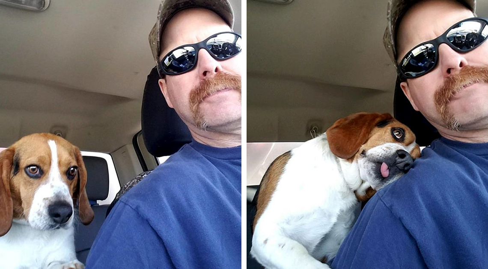

Beagle Can’t Contain His Gratitude After Man Rescues Him From A Deadly Shelter

Dogs are beautiful and lovable animals.
They have become a core part of many households and lives around the world. Even if you do not have a dog you know and love many of the dogs owned by the people around you.
With this in mind, no one would like to see these beautiful animals harmed in any way. An example of this is one man, Joe Kirk, who saved a dog named Gregory from a shelter before he would have been euthanized.
It is truly an act of kindness and the adorable Gregory the beagle clearly appreciated the rescue.
Two year old Gregory the Beagle and Joe Kirk after leaving the shelter
Joe saved this beautiful dog two days before he was to be euthanised. Joe and his wife Schenley Hutson-Kirk are co-founders of a non-profit organization based near Findlay, Ohio called Hound Rescue and Sanctuary. This organisation helps dogs who are considered unadoptable find homes and avoid euthanasia.

Feeling the love
“Gregory is one thankful and appreciative Beagle! He KNOWS he is SAFE! He is Heartworm Positive and will be going through treatment, but he knows he is in good hands! We will get him healthy and provide him all the love he so deserves and a wonderful future!!” Schenley recounted on Facebook.

Safe at last
“We generally house and care for 25 to 30 dogs at a time, consisting of dogs that are available for adoption as well as sanctuary dogs that will live out their lives being loved and cared for by us,” Schenley and Joe Kirk said. “After saving Gregory from the euthanasia list at the shelter, we provided him the veterinary care and heartworm treatment he required.”
“after successfully completing his treatment, Gregory was adopted to his forever home. He now has a wonderful family that loves him very much and he is enjoying a very happy life. Gregory’s family also has another Beagle and he and Gregory have become best pals.”
“We are often asked how many dogs we have saved. The answer that always comes to mind is, “we have saved one more”. One more dog is safe and will have all of the love and respect that they are so deserving of. One more dog will be properly fed and receive needed veterinary care. One more dog will have a loving forever home. There is no better feeling and nothing in life that is more fulfilling,” the couple explained.

Gregory was going to be euthanised because had heartworm disease
This is caused by worms measuring up to a foot long in the heart, lungs, and blood vessels. Symptoms include weight loss, fatigue, decreased appetite, reluctance to exercise, a mild persistent cough, a swollen abdomen, and heart failure.

The facts about shelters
2.7 million out of 7.6 million pets in shelters across the United States are euthanised for various reasons each year. These reasons include contagious illnesses or overly aggressive behavior although many are simply because of overpopulation. Adopt a dog to help reduce these numbers.

Here is what others had to say about this story.

He truly is.

If more people adopted these dogs, euthanasia would be a thing if the past.

Indeed they do

That’s the real question.

He really did look thankful

I can understand why you would love them. This one is beautiful

Thank you for saving that dog and giving them a good home.

It really is a look of happiness

Your thoughts!
What do you think of this story? Do you know of any similar stories?